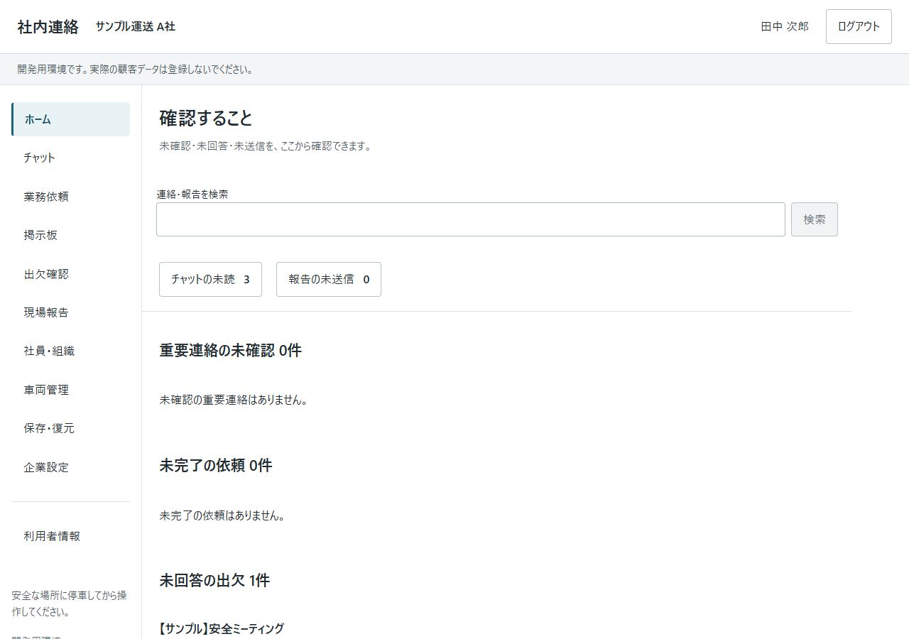
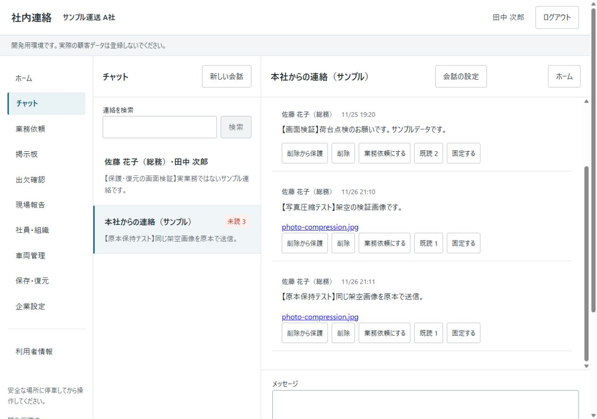
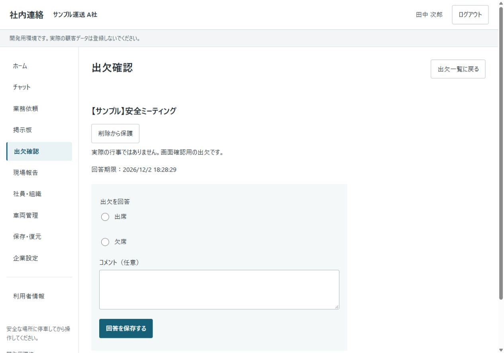
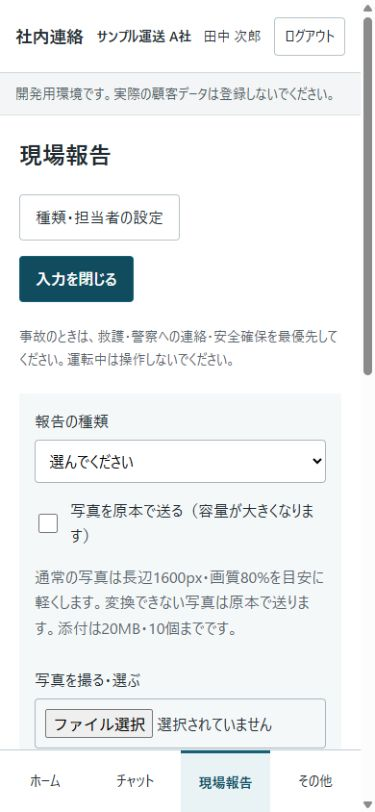
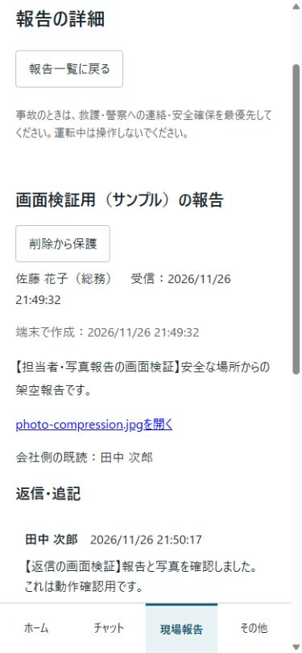
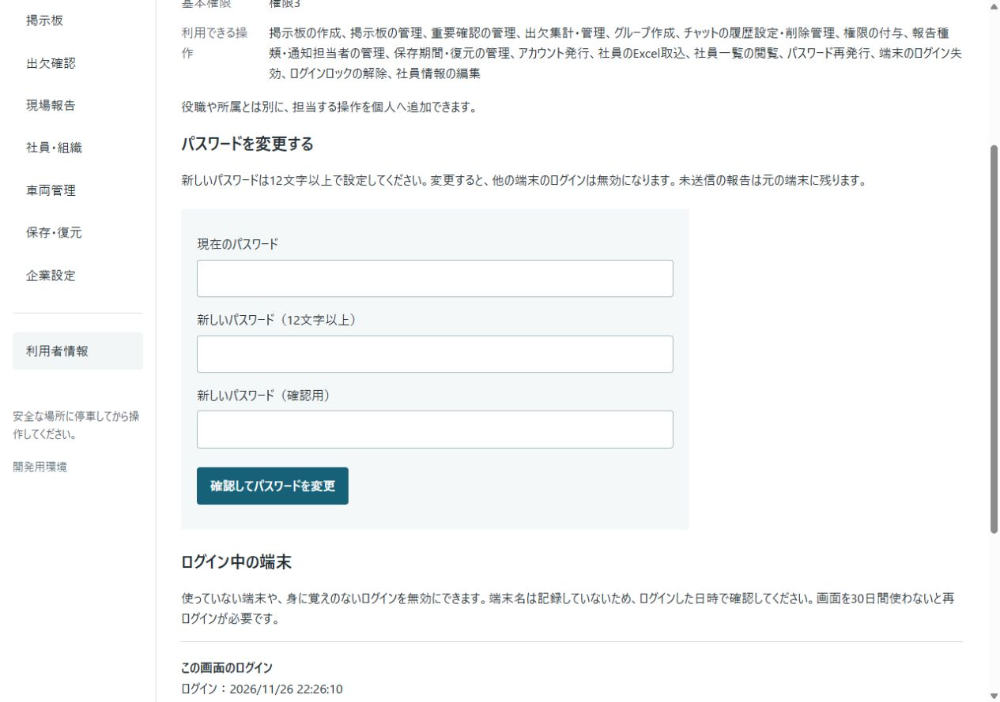

このページは画面画像の見本です。
画像の中のボタンは操作できません。画像を選ぶと元の大きさで開きます。実際の操作確認は、担当者のPCで動かしている開発版を使って行います。
実在する企業・社員・事故・配送の情報は含めていません。
1. ホーム：確認することをまとめる
未読の連絡、未回答の出欠、未完了の依頼などをここから開きます。

2. チャット：会話・添付・既読
会話を選んで連絡します。写真やファイルを付けたり、連絡から業務依頼を作成できます。既読と重要連絡の確認は別々に管理します。

3. 出欠確認：出席・欠席を回答する
出席または欠席を選び、必要ならコメントを添えて保存します。管理側では集計とExcel出力ができます。

4. 現場報告：スマホから写真で報告する
報告の種類を選び、写真と必要なコメントを付けます。位置情報は任意です。運転中は操作せず、安全な場所に停車してから使います。

5. 報告の返信：会社側の確認と追記
誰が確認したかを表示し、報告に対して返信や後日の追記を残します。一般の従業員が他の人の非公開報告を読むことはできません。

6. 利用者情報：自分のパスワードを変更する
現在のパスワードを確認してから、12文字以上の新しいパスワードを設定します。他の端末はログインし直す必要があります。未送信の報告は元の端末に残ります。

確認していただきたい点
- 文字とボタンは見やすい大きさか。
- 未確認の連絡や未回答の出欠を迷わず見つけられるか。
- 出欠の回答、写真の報告、返信までの操作が分かりやすいか。
- 普段の業務で足りない情報や、不要な入力がないか。
修正したい画面名と、分かりにくかった操作を担当者へお伝えください。
この見本では確認できないこと
実際のログイン、データの保存、プッシュ通知の到達、撮影・GPS、圏外での再送、複数人の同時操作、企業間のデータ分離は、実際に動く開発版で別途確認します。
これは商用運用の開始や、本番公開の案内ではありません。